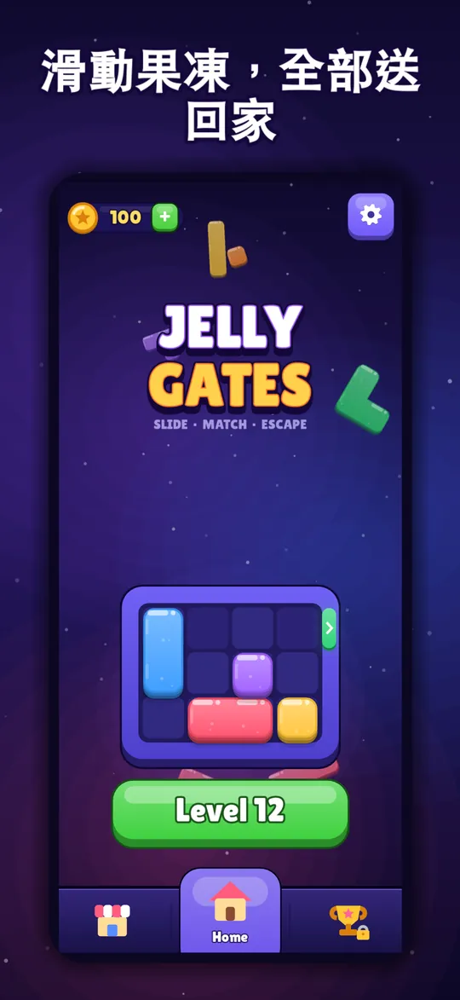
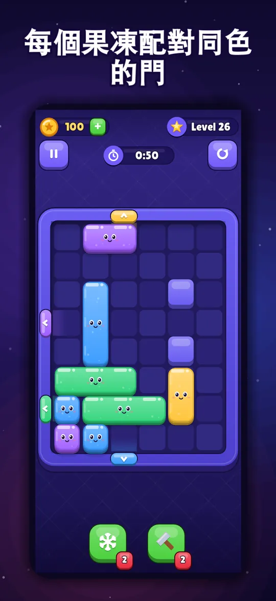
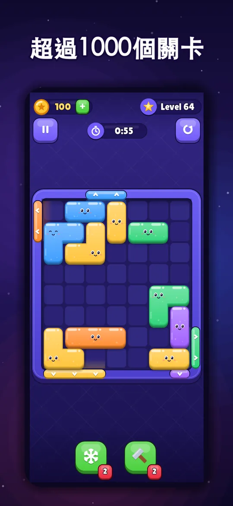
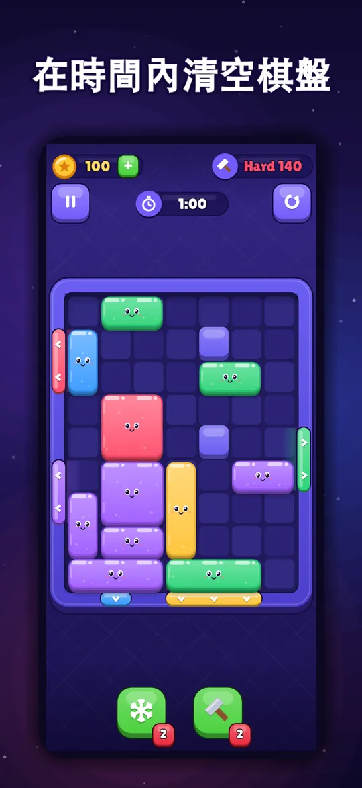
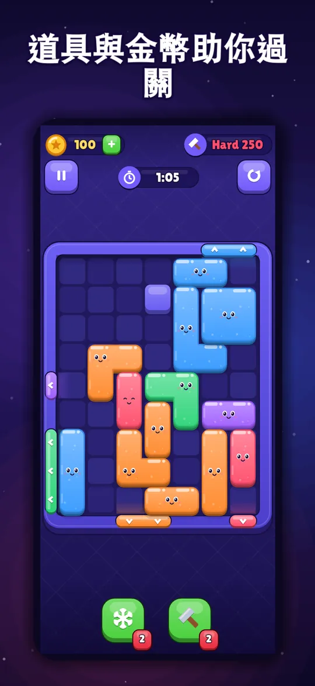

Jelly Gates 色彩方塊滑動益智遊戲
把Q彈果凍滑向同色的門，趕在倒數計時結束前讓每個色彩方塊逃出棋盤！
- 即將推出Google Play
- 即將推出App Store
免費遊玩，含廣告。支援 Android 與 iPhone。

一次又一次的暢快逃脫
提前想好下一步，在對的時機滑動對的果凍，看著棋盤一步步清空。





不靠運氣、靠規劃取勝的色彩方塊益智遊戲
Jelly Gates 把經典的滑塊拼圖，變成一場繽紛Q彈的果凍大塞車。棋盤上擠滿晶亮的果凍方塊，每一顆都想穿過和自己同色的門回家。果凍之間會互相擋路，所以移動的順序就是一切。
這是一款邏輯益智遊戲，獻給想要真正動腦、而不只是打發時間的青少年與成年玩家。每個棋盤都是一道小小的燒腦謎題：看清顏色、找出擋路的方塊，再排出正確的順序。如果你喜歡滑塊拼圖、方塊逃脫或顏色排序遊戲，這款果凍方塊益智遊戲放進你的手機再適合不過。
-
1000+ 益智關卡
先挑戰1000個關卡，之後還有源源不絕的重組關卡，永遠不怕沒有謎題可解。
-
每個果凍都有自己的門
紅色果凍只能從紅色的門離開，藍色果凍只能從藍色的門離開。
-
困難關卡
每10關就有一個真正考驗邏輯的困難關卡，途中還會穿插輕鬆的關卡，讓你喘口氣。
-
冰凍與粉碎
兩種道具幫你化解卡關：讓計時器暫停、冷靜規劃，或是打破一個擋路的果凍。
-
離線也能玩，隨時隨地
不需要Wi-Fi。關卡短小，休息片刻、搭飛機或通勤時都能來一局。
-
個性十足的果凍
晶亮的果凍帶著豐富表情，會晃動、擠壓、彈跳，每次滑動都有療癒的音效。
遊戲玩法
幾秒就能上手，想精通卻不容易。
-
滑動
拖曳果凍，讓它在棋盤上滑動。先移開擋路的方塊。
-
配對
把每個果凍帶到棋盤邊緣與它同色的門。
-
逃脫
在倒數計時結束前，讓所有果凍離開棋盤。
準備好送每個果凍回家了嗎？
從第1關開始，看看你的邏輯能帶你走多遠。
- 即將推出Google Play
- 即將推出App Store
Jelly Gates 可免費遊玩，並含有廣告。觀看獎勵影片一律為自願選擇。
支援
有疑問、想回報錯誤，或是對遊戲有新點子？歡迎寫信給開發者。
聯絡我們
請來信聯絡我們，方便的話請附上你的手機型號與關卡編號。
abdelrhmannkhaledd1@gmail.comJelly Gates 由 AbdelRhman Khalid 開發與發行。想了解遊戲如何處理資料，請參閱隱私權政策（英文）。
需要網路連線嗎？
不需要。Jelly Gates 可以離線遊玩，搭飛機、坐火車或在家都能玩。
遊戲是免費的嗎？
是的。遊戲可免費遊玩，並含有廣告。部分關卡之間可能會出現短廣告，觀看獎勵影片一律為自願選擇。
我的遊戲進度存在哪裡？
只會存在你自己的裝置上。不需要註冊帳號；解除安裝遊戲後，進度也會一併刪除。
我卡關了，該怎麼辦？
使用「冰凍（Freeze）」讓計時器暫停，或用「粉碎（Smash）」打破一個擋路的果凍。通過困難關卡就能獲得道具，也可以用金幣兌換，或自行選擇觀看短影片來領取。